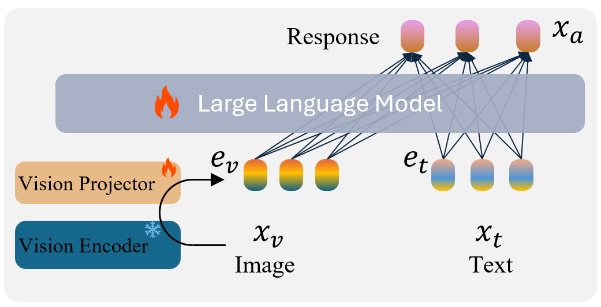
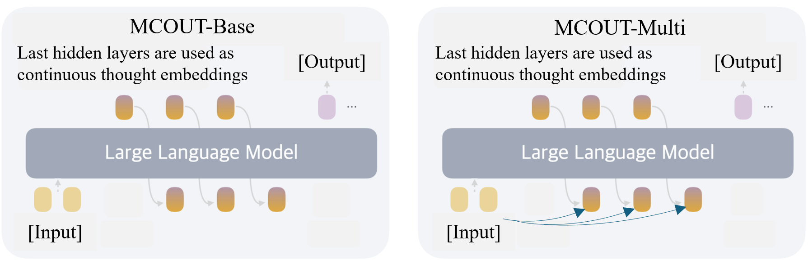
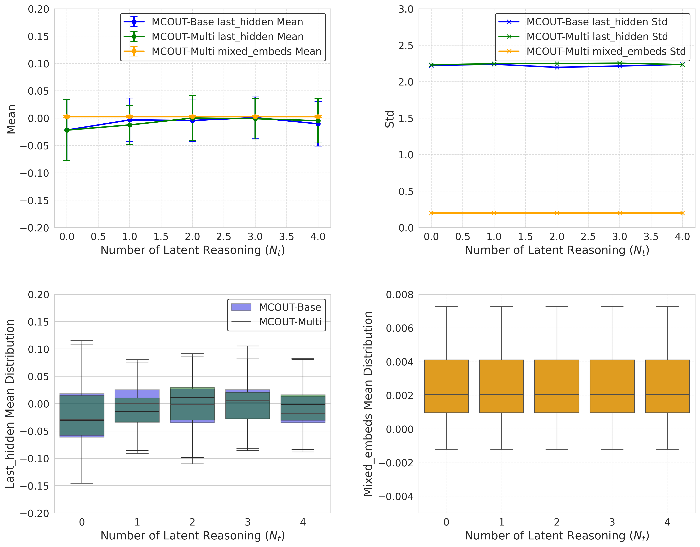

现在的 AI 思考问题时，习惯"把每一步想法写成一句句话"（这叫思维链 CoT）。这篇论文说： 对于既要看图又要读字的模型，没必要把想法翻译成人话，直接在"脑子里"用一串数字（向量）来回琢磨几遍，效果反而更好、还更省。 他们把这套方法叫 MCOUT，用一个很小的 10 亿参数模型就做到了，在三个测试里准确率最多提升了 8.23%。
你一定听过 ChatGPT 这类 AI 在回答难题时，会"一步一步分析"。这种"把思考过程一句一句写出来"的方式，专业名词叫 思维链（Chain-of-Thought，简称 CoT）。比如做数学题：
问题：小明有 3 个苹果，又买了 5 个，吃掉 2 个，还剩几个？
AI 的思维链：先 3 + 5 = 8 → 再 8 − 2 = 6 → 所以答案是 6。
这招对纯文字任务非常好用。但是问题来了 👇
你心算一道题的时候，脑子里其实是一团"模糊的感觉和数字"在快速翻滚，你并不会在心里一字一句地默念"现在我要把三加五……"。 等想清楚了，你才把最终答案说出来。
逼着 AI 每一步都"说人话"，就像逼你心算时必须把每个中间步骤大声念出来——又慢又容易乱。 MCOUT 想做的，就是让 AI 也能"闷着头在心里想"，想明白了再开口。
这里要引入一个关键词：潜空间（latent space）。听起来玄乎，其实很简单：
AI 内部不是用文字思考的，而是用一长串数字（叫向量 / 隐藏状态 hidden state）来表示"我现在脑子里的状态"。 这串数字所在的"数字世界"，就叫潜空间。它就像 AI 的"内心活动"——外人看不懂，但信息量比一句话丰富得多。
过去的方法（思维链 CoT）是：想一步 → 翻译成文字 → 再读这句文字 → 想下一步。每次都要"内心 ↔ 文字"来回翻译，损耗很大。
MCOUT 受到一个叫 COCONUT 的前人工作启发，干脆把"翻译成文字"这步砍掉：
🧠 想一步 → 翻译成文字 → 直接把"内心状态"再丢回去想下一步 → ……反复几遍 → 最后才说出答案
这就是"连续思考链"（Chain of Continuous Thought）名字的由来：思考是连续的数字流，而不是一个个离散的词。
在讲 MCOUT 怎么"想"之前，先看一眼这个看图模型的基本骨架。它由三部分拼起来：

💡 为什么故意用这么小的模型？因为作者想证明：就算是小模型，靠"潜空间推理"也能变聪明，而不是靠堆参数。这更省、更实用。
作者做了两个版本，区别只在于"在脑子里想的时候，要不要再回头看一眼图片"：

最朴素的做法。把模型"上一轮想完后的内心状态"（最后一层隐藏状态 h_l），原封不动当作下一轮的"想法"再喂回模型，反复 N 次。
就像一个人闭着眼睛、反复在心里默想同一个问题好几遍，越想越清楚。
更"用心"的做法。每一轮想的时候，不只用上一轮的内心状态，还额外让它再去"注意看一眼"图片信息，再融合成新的想法。
实现这个"再瞄一眼"的部件叫 多模态潜在注意力（Multimodal Latent Attention）。说人话就是：
新想法 = 把"上一轮的内心状态"当作问题，去图片信息里"查一查、对一对"，再揉成一团新数字。
就像一个人做阅读理解题时，想一步就回头看一眼原文，确认自己没记错——这更接近人类"反复核对"的思考方式。
为了让"中间那几轮想法"也别瞎想，作者在训练时给每一轮中间想法都加了一点点"监督"，用一个权重 μ 来控制管得松还是严。 后面实验发现 μ = 0.3 最合适——管太松（μ=0）效果一般，管太严（μ=0.8）反而会干扰最终答案。恰到好处最好。
作者在三个公认很难的"看图答题"考试上做了测试。Baseline = 同一个模型但不用 MCOUT（即不在脑子里多想几遍），是对照组。 "准确率"越高越好；↑ 是相对对照组的提升幅度。
| 考试（数据集） | 对照组准确率 | 用了 MCOUT 后 | 提升 |
|---|---|---|---|
| MMMU （大学级跨学科难题） | 25.44% | 27.53% | ↑ 8.21% |
| ScienceQA （科学常识推理） | 56.17% | 58.86% | ↑ 4.79% |
| MMStar （精细视觉推理） | 25.13% | 26.13% | ↑ 3.98% |
注：表里取的是各考试中 MCOUT 表现最好的设置。"提升 8.21%"指相对提升（27.53 比 25.44 高出约 8.2%），不是加了 8 个百分点。
MCOUT 用的只是 10 亿（1B）参数的小模型，但成绩却超过了不少 70 亿、甚至 130 亿参数的大模型（比如 LLaVA-7B、MiniGPT-4-13B）。 这说明："让模型多想几遍"带来的提升，有时候比"把模型造得更大"更划算。
有点出乎意料：埋头自己想的 Base 版，和边想边看图的 Multi 版，成绩几乎一样（比如 ScienceQA 上 58.60% vs 58.45%）。 按理说 Multi 版"还看了图"应该更强才对——为什么没拉开差距？这就引出了下面这个很有价值的发现。👇
好论文不只报喜。作者深入扒了模型内部，发现 Multi 版那个"再瞄一眼图"的机制，其实基本没起作用——这种现象叫 模态坍缩（modality collapse）。

作者测量了两股信息的"活跃程度"（用标准差衡量，可以理解为"这股信息有多少变化、多少内容"）：
| 信息来源 | 波动幅度（std） | 含义 |
|---|---|---|
| 模型自己的内心状态 | ≈ 2.2 | 活跃、内容丰富 ✅ |
| "再瞄一眼图"融进来的信息 | ≈ 0.2 | 几乎是死水一潭 ❌ |
图片信息的波动只有内心状态的十分之一，而且每一轮都几乎一模一样、纹丝不动。 这说明那个"注意力"机制偷懒了：它没真去图片里挖有用的细节，等于图片白看了。
所以 Multi 版表现和 Base 版差不多——因为它实际上退化成了 Base 版。作者还引用了别人的研究，指出这是当前多模态模型一个普遍的老毛病（视觉注意力"沉没"、信息分布"熵坍缩"）。
👏 为什么说这是"有价值的发现"？ 因为作者没有假装 Multi 版很成功，而是诚实地指出"我设计的图文融合还没真正生效"，并把原因（数字尺度不匹配、注意力变均匀）分析清楚。 这等于给后来的研究者指明了一个明确的待解决问题：怎么让"看图"这步在潜空间推理里真正活起来。
Q1：所谓"在脑子里想"，模型到底想了什么？我们能看懂吗？
看不懂。那是一串纯数字（向量），没有对应的人类词语。这既是优点（信息密、不啰嗦），也是缺点（不可解释，我们没法直接知道它在想啥）。
Q2：为什么"多想几遍"就能更准？
可以理解为给模型更多"思考时间/算力"去打磨答案。第一遍可能想得粗糙，多迭代几遍让内心状态逐渐收敛到更靠谱的结论——类似人"再三推敲"。论文里 N=10 通常比 N=5 略好一点点。
Q3：这和 ChatGPT 那种"一步步分析"有啥本质区别？
ChatGPT 的"一步步"是真的写成文字给你看（离散、可读、但慢且费 token）；MCOUT 的"一步步"是在内部用数字进行（连续、不可读、但快且省）。一个在"说"，一个在"想"。
Q4：那个提升 8% 听起来不多，重要吗？
在这些很难的基准上，几个百分点的稳定提升其实已经不容易了；更关键的是它几乎不增加模型大小、只多花一点点推理时间就拿到了。这种"低成本提升"在工程上很有吸引力。
本网页是对论文的通俗化解读，图 1/2/3 来自原文（arXiv: 2508.12587）。具体数值与表述以原始 PDF 为准。